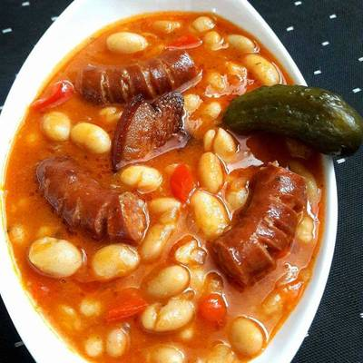

Mancare de Fasole

Descriere
Fasolea este o plantă leguminoasă agățătoare anuală care este originară
din America și este întrebuințată în bucătărie
Ingrediente
- 500g fasole
- 300ml bulion de rosii
- 3 cepe
- 2 morcovi
- 1 radacina de pastarnac
- 3 catei de usturoi
- sare
- piper
- patrunjel verde
Pasi de urmat
- Se curata fasolea
- Se incalzeste apa in oala
- Se toarna fasolea in oala
- Se torn ingredientele in oala
- Se adauga bulionul in oala
- Se lasa la cuptor cca. 30 de minute